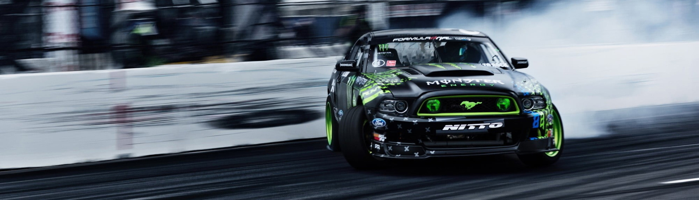
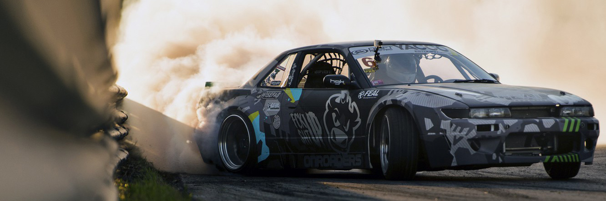

Американская дрифт серия

Ford Mustang RTR 2013
Уникальный спорткар построен совместными усилиями компаний Ford Racing и Roush Yates, а
управлять им будет прославленный дрифтер Вон Гиттин младший.
>
Гоночная серия, основателями которой являются Джим Лиав и Райан Сэйдж. Первый заезд в рамках этой серии
состоялся в 2003 году. «Формула Дрифт» (Formula DRIFT или Formula D) считается самой популярной
автогонкой в категории дрифтинг. Она прославилась адаптацией цифровых технологий в мире автоспорта и
наибольшей популярностью пользуется среди так называемого “поколения миллениалов”

Nissan Silvia S13
Эта модель сильвии пользовалась огромной популярностью на своей родине - Японии. Начиная с этой
модели, её название, "Сильвия" перестало использоваться на экспортных моделях.
История возникновения серии
Дрифтинг обрел огромную популярность в США в начале 90-х, в эти годы энтузиасты организовывали
регулярные подпольные гонки. В начале 00-х была создана дрифт-ассоциация позволяющая водителям
практиковать искусство дрифтинга на специальных трассах. Таким образом, гонки начали ассоциироваться с
понятием «автоспорт».
Вскоре дрифт-ассоциация провела ряд выставочных мероприятий по всей стране, которые были направлены на
пропаганду серии как безопасных гонок. Любители автоспорта могли получить навыки этой уникальной техники
управления автомобилем под руководством лучших дрифтеров США и Японии – Алекса Пфайффера, Кальвина
Ванна, Энди Йена, Кенджи Сакаи и Хиро Сумиды. Высокая популярность способствовала привлечению
инвесторов, организовывающих различные выставочные гонки. Однако до июня 2003 года гонки имели хаотичный
характер и проводились лишь при наличии спонсоров.